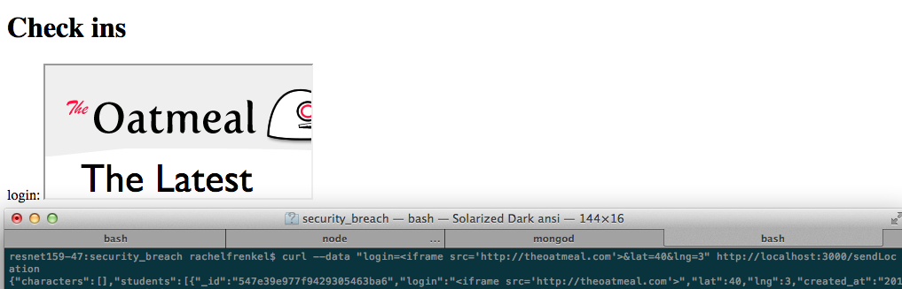
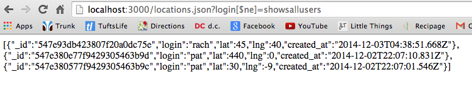
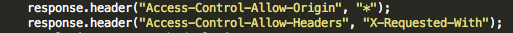

As you can see by this picture, I posted data to a user and did not pass in floats for the lat and lng parameters. This user was still inserted into the database, and displayed on the home page of the site.
As you can see by this picture, I posted data to a user and did not pass in floats for the lat and lng parameters. This user was still inserted into the database, and displayed on the home page of the site."Where in the World" is an application that displays the login times and locations of users. It allows a user to provide this information, and to see all information of a single user or of all users. It also provides JSON of the MBTA live train times, through use of their API.
This is an assessment of the security of Charles Colley's implementation of the application. Four vulnerabilities were found and are described below, but that by no means proves that no other vulnerabilities exist. If anything, these examples below show just how ubiquitous security flaws are.
Testing was mainly run blackbox. Curl was used for POST requests to insert malicious input. No other outside tools were used to find vulnerabilities. After blackbox testing, I read through the code to see how data was stored and if there were other vulnerabilities that I could dig into more.
Most of the below vulnerabilities are cases of unchecked bad input from clients. An attacker can put in bad login and location information, which allows them to display invalid entries on the site, or to change the type of information the entries are meant to display. An attacker can also take advantage of the site to show the information of all of the users.
These types of attacks display incorrect, invalid, or meant-to-be-inaccessible information on the website.
This is of low severity because, while it does not change the basic formatting of the user entries and website formatting, it does allow for invalid entries of incomplete latitude and longitute. This allows users to login without providing a location, and these user entries will still be displayed on the site home page.
In the POST request, the query lat and lng variables are extracted using the parseFloat() function. However, this function returns NaN (not a number) if the variable is not a float. The application then inserts the result of parseFloat, no matter what the return result, into a toInsert variable and stores this in the database with
var id = collection.insert(toInsert,
This allows for a lot of invalid entries, which may include 'NaN' for the lat and lng values for a user.
As you can see by this picture, I posted data to a user and did not pass in floats for the lat and lng parameters. This user was still inserted into the database, and displayed on the home page of the site.
This is a relatively easy issue to fix. The application can take advantage of the node.js validator library, which includes the function isFloat(). This function can be applied to the lat and lng variables after they have gone through parseFloat(), to ensure that what is being inserted is indeed a float, and not NaN. This solution could look as follows:
var lng = parseFloat(request.body.lng);
var lat = parseFloat(request.body.lat);
//check if all inputs are there, and that lat and lng are floats
if ( !login || !lat || !lng || !isFloat(lat) || !isFloat(lng))
{
reponse.send(500);
} else { ...
This is a highly severe issue because it allows an attacker to input malicious data into the site. This can manipulate the site into functioning in a way that it is not supposed to, doing things such as page redirects or displaying of images instead of user data. Most dangerously, if an infinite loop is put into script tags, this will suspend the site, rendering it unusable.
In the POST request, the login query is inserted into the database without first being sanitized. Unlike lat and lng, it does not go through the parseFloat() function, so it is not even translated into something more harmless like NaN. This allows an attacker to insert malicious HTML and Javascript as the login. As a result, when the home page is accessed and all user infos are displayed, this malicious HTML or Javascript is run, which can have terrible consequences for the site.
To show this issue, I used three different methods. These images are what was displayed when I went to the home page of the site.
I inserted an iframe of the site "theoatmeal.com" for the login:  This homepage display of the users was completely hijacked by this iframe tag. No other users were displayed, holding up the rest of the page information, and a frame of the malicious irrelevant site was displayed instead as the login.
I inserted a javascript command to redirect to "funnyordie.com"
 This made it so that when the homepage is accessed and the application attempts to display the login containing the redirect command, the command is executed and the homepage now displays the new website. This is highly dangerous -- it can completely wipe out a site and not allow any of it to display, only to display other unrelated sites. It can confuse clients, and turn them away from the site (literally and figuratively).
This made it so that when the homepage is accessed and the application attempts to display the login containing the redirect command, the command is executed and the homepage now displays the new website. This is highly dangerous -- it can completely wipe out a site and not allow any of it to display, only to display other unrelated sites. It can confuse clients, and turn them away from the site (literally and figuratively).
I inserted a javascript command to execute an infinite loop
 This made the server completely unresponsive. I tried loading the homepage, which had this infinite loop, and was forced to kill the page. This attack managed to bring down the entire site.
This made the server completely unresponsive. I tried loading the homepage, which had this infinite loop, and was forced to kill the page. This attack managed to bring down the entire site.
To resolve this issue, the login parameter must be sanitized before it is added to the database. This can be done in a variety of ways. One module that makes this easier is the node.js 'validator' module. In its newest version, you can use its escape() method to replace <, >, &, ', and " with HTML entities. You can also escape the user input by using validator's whitelist() function to remove characters that do not appear in the whitelist.
This is also part of the cross-site-scripting issue above, the issue has just been broken up for clarity and simplicity.
This is of medium severity because it allows the site to continue running its processes as usual, but with faulty user information. If the goal of the site is to display users and their locations, then this problem is ruining this goal and providing faulty information that will make users unable to trust the site.
The query variables for a login, lat, and lng are not checked for accuracy when taken from the POST request. The unchecked lat and lng allow a user who, for example, is really logging in from Tufts in Medford, to put in the lat and lng for Antarctica. This is not checked against the user's actual geolocation, so the user will falsely be able to login from anywhere in the world.
The unchecked login will allow a user to use any login username they like -- a non-existing user, or, more dangerously, a username of a different user. This last case is highly severe, because it allows any attacker to manipulate the logins of any user, causing a high flow of false information and distrust on the site.
I logged in from Somerville, MA (my lat is 42, my lng is -71), but using the POST request I logged in from Antarctica at lat -90, lng 0.

I logged in as a different user, and could post that this user was in any location I pleased

To fix the latitude and longitude accuracy, the application should use geolocation to determine the location from where the user is posting. To fix user accuracy, a user should have to log in to use this application, and then their session determines the username that a user may post with, the application does not depend on a truthful user. However, this is far above and beyond the specifications of the project, so it is a very serious security flaw that is not expected to be handled by the application.
This is a highly severe issue because it allows a user to see the information of all users. In this particular case, because the home page displays all user info, it is arguable that this security flaw is not so severe because the information is already available, but to allow a user to make a request to show all users not equal to a username is, in general, a very serious security flaw.
An attacker may manipulate the GET request for a user by using MongoDB syntax. Instead of displaying the information belonging to a login equal to a username, by using [$ne], an attacker can display the informations of all usernames not equal to the provided login username.
 This displays all users not equal to the username "showsallusers". This means that any attacker can manipulate the site to display all users who have logged in.
To resolve this issue, the login query variable should be forced to a string.
var login = request.query.login;
login = login.toString();
Now when an attacker passes "login[$ne]=showsallusers" to the query, the application no longer searches for "{ '$ne': 'showallusers' }", and instead of returning the information of all users in the system not equal to 'showsallusers', an empty array is returned instead (the default value for a user without any entries).
This issue is of medium severity, because it allows any origin to make a request and receive the response of the 'whereintheworld' website. If this information is not meant to be accessed in such a way, then this is luckily easily fixed.
This implementation of 'whereintheworld' allows sharing with every origin. This means that any origin can make an XHR request to the site and get back the server's response.

This was found by looking through the actual server code. The above image is in the file 'server.js'. The asterisk represents that any origin should be allowed access.
To resolve this issue, the application should only allow sharing with the specific origins that it needs to interact with. For example, a line allowing the site to share with http://example.com would look like
response.header("Access-Control-Allow-Origin", "http://example.com");
This will prevent an excess of origins from being able to make requests and receive responses from 'whereintheworld'.
As it stands, there are a handful of serious security flaws in the 'whereintheworld' application. If the above recommendations are followed, the site will be much more prepared for attacks. Luckily, these are easy to implement.
What is a much larger job, and thereby is harder to implement, is user accounts and sessions in order to verify user postings. This is very possible, but will take much more effort and restructuring of the application than the other issue solutions.
All in all, it will cost about $700 to hire help to fix the above issues, create user accounts and secure functionalities, and do a complete security evaluation. After this investment, 'whereintheworld' will be incomparably safer.